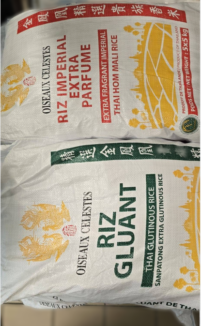

Rayon Riz et Poudres
Les produits du rayon riz et poudres les plus achetés
Poudres – De la chapelure ou préparation pour briche chinoise, trouvez ce qu'il vous fera plaisir.
Riz – Retrouvez tous les sacs de riz en format miniature !
Farines – Vous avez besoin de farine de tapioca ? Ne cherchez plus, tout ce trouve ici.
Riz parfumé
Riz Aromali
Riz petit format – Petit format du riz gluant et parfumé.
Riz long
Riz cassé
Riz gluant